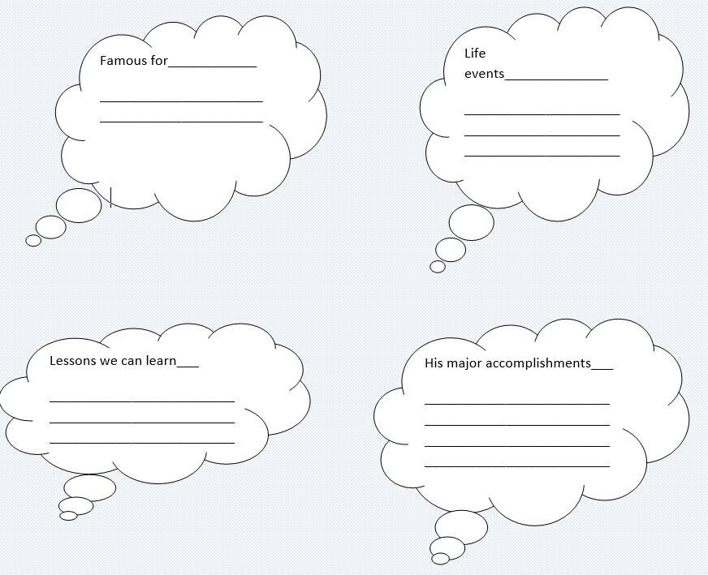

Albert Einstein was born in Germany in 1879. He enjoyed classical music and played the violin. One story Einstein liked to tell about his childhood was of a wonder he saw when he was four or five years old: a magnetic compass. The needle's invariable northward swing, guided by an invisible force, profoundly impressed the child. The compass convinced him that there had to be "something behind things, something deeply hidden."
Even as a small boy Einstein was self-sufficient and thoughtful. According to family legend he was a slow talker, pausing to consider what he would say. His sister remembered the concentration and perseverance with which he would build houses of cards.
There was a well-known kinetic energy theory that explained heat as an effect of the ceaseless motion of atoms; Einstein proposed a way to put the theory to a new and crucial experimental test. One should be able to observe this through a microscope, and if the predicted motion were not seen, the whole kinetic theory would be in grave danger.
Einstein had reinforced the kinetic theory, and he had created a powerful new tool for studying the movement of atoms.
Task1 Reading
Read the text and answer the questions.
🔸 Where and when was Einstein born?
🔸 What musical instrument did he play?
🔸 How old was he when he saw a magnetic compass for the first time?
🔸 What convinced him that there had to be “something behind things”?
🔸 How did his sisters describe him as a child?
🔸 How did he explain kinetic theory?
Task2 Vocabulary
Write a word that is similar in meaning to the underlined part.
🔸This gas isunable to be seen and present to some extent in every home.
In ___si ______
🔸The island has the greatest focus on of seabirds in the north-west.
Con ____ra_____n
🔸It took a lot of patience and continued effort for all sides to reach an agreement.
Per ______ran____
🔸She's a young woman who is dealing with all, without getting any help.
Self-__________nt
🔸When a baby becomes ill there can be constant crying.
Cea ________ ss
Task 3 Listening
Listen to the conversation. Underline the correct options.
1. The woman wants to go to the city center/airport.
2. Her train leaves at 9.15/9.40.
3. She can buy a ticket from the ticket machine/on the train.
4. The ticket is £25/£10.50.
5. The train goes from platform 2/3.
Task4 Writing
Who was Albert Einstein?

Ortga